En este write-up, me adentro en los retos de MemLabs, una serie de laboratorios diseñados para poner a prueba nuestras habilidades en el análisis de volcados de memoria. Equipado con Volatility, una de las herramientas más potentes para diseccionar sistemas vivos o caídos, iré desenterrando credenciales, procesos sospechosos, conexiones de red y cualquier pista que hayan dejado atrás.
El momento ha llegado, damos pie al último reto, el más complicado del desafío, MemLabs Lab 6 - The Reckoning
Recibimos este volcado de memoria del Departamento de Inteligencia. Dicen que esta evidencia podría contener secretos del mafioso del bajo mundo, David Benjamin. Este volcado fue extraído de uno de sus trabajadores, a quien el FBI detuvo a principios de esta semana. Tu tarea es revisar el volcado de memoria y ver si puedes descubrir algo. El FBI también comenta que David se comunicaba con sus trabajadores por internet, así que podría ser un buen punto de partida.
Además, este reto solo tiene 1 flag dividia en 2.
Para sacar la memoria debemos usar el siguiente comando:
vol.py -f MemoryDump_Lab6.raw imageinfo
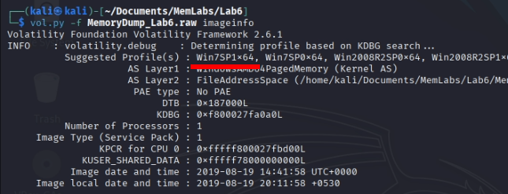
Como ya he dicho varias veces, podemos usar cualquira que nos salga.
Cuando hablamos de internet, lo que primero que se nos viene a la cabeza es el historial del navegador, así que empecemos por ahí.
Lo primero que haré es ver si el archivo del historial está cargado en la memoria con filescan:
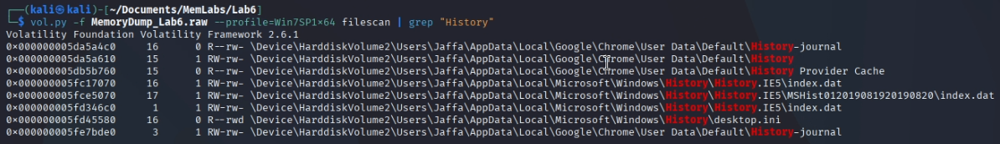Ahora podemos pasar a exportar el archivo con dumpfiles y abrirlo con sqlitebrowser:
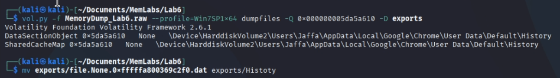Y para ver las páginas a las que accedió, seguimos los siguientes pasos:
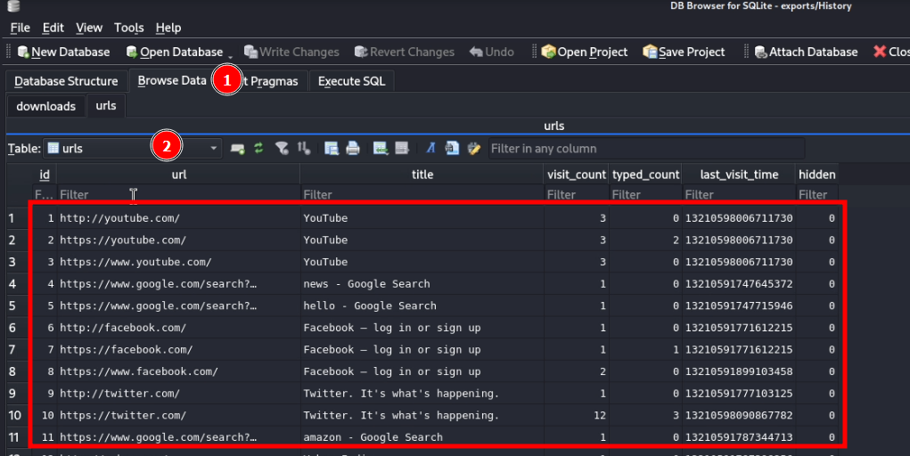Lo único extraño que veo, es el siguiente link de pastebin, aplicación web que funciona como un portapapeles en línea
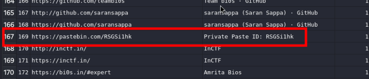 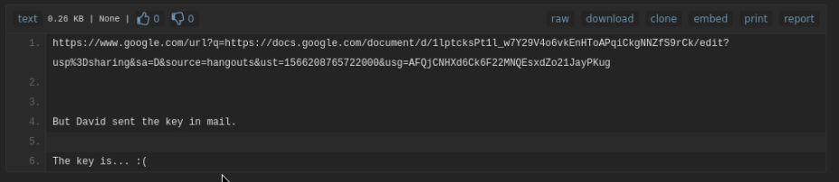El enlace a google documents, nos lleva a un documento lleno de frases en latin, pero, escondido en los parrafos, encontramos otra URL al sitio mega:
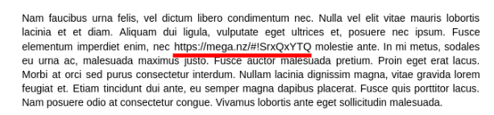Desgraciadamente, el archivo está encriptado por contraseña, contraseña que aún no tenemos. Dejamos el enlace a mega apartado y seguimos buscando.
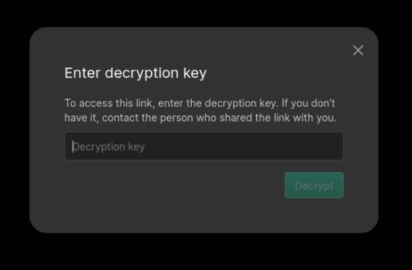Usando hashdump, encontramos 2 usuarios en el sistema: Jaffa y g4rud4.
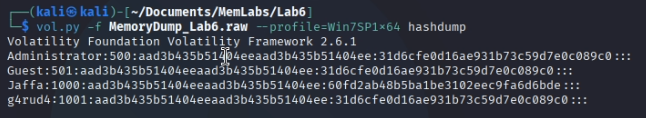En el directorio de g4rud4 no hay nada interesante, a diferencia del de Jaffa, en el cual podemos encontrar una flag protegida:
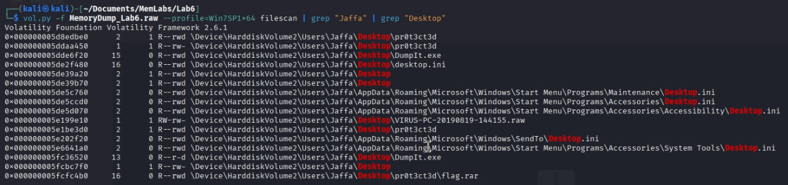 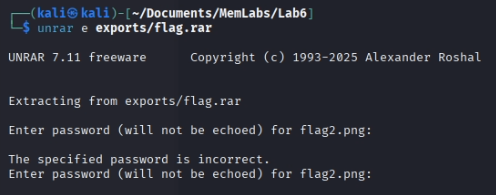Al intentar descomprimir no nos da ninguna pista, pero asumo que está escondida en la memoria, veamos si las variables de entorno guardan algo interesante:
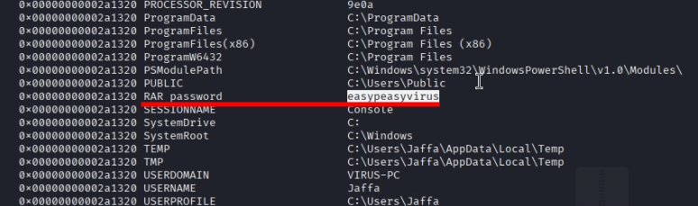Efectivamente, encontramos la contraseña del archivo comprimido así como la segunda mitad flag, pero aún nos queda la primera.
Podemos intentar usar el módulo screenshot, el cual nos devuelve imágenes de los últimos momentos de la extracción de la memoria:
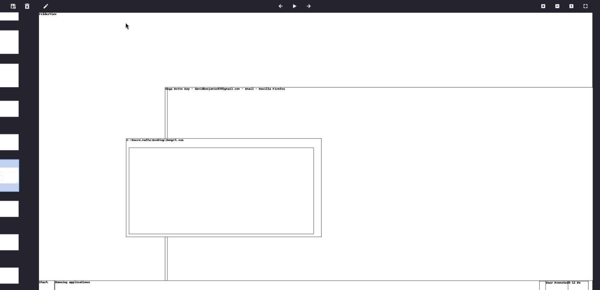No sacamos nada así.
Lo único que se me ocurre es hacer un strings de la memoria completa filtrando con Mega Drive:
El comando strings se utiliza para ver las líneas leibles de un archivo, independintemente de la extensión.
Es como si abriesemos un archivo con el blog de notas y solo nos quedaramos con las palabras que entendemos.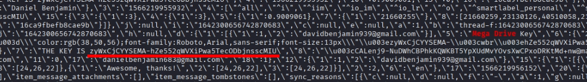
Tenemos el archivo, problema, no se abre, solución, los números mágicos no son correctos, los editamos con cualquier edito hexadecimal, y tandríamos la solución al desafío:
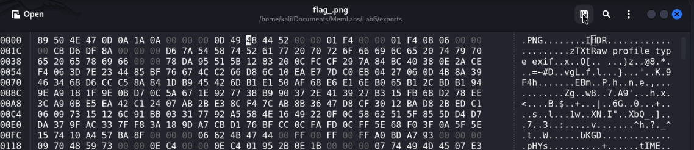Según Wikipedia, el hexadecimal de los archivos png deben empezar con esos números.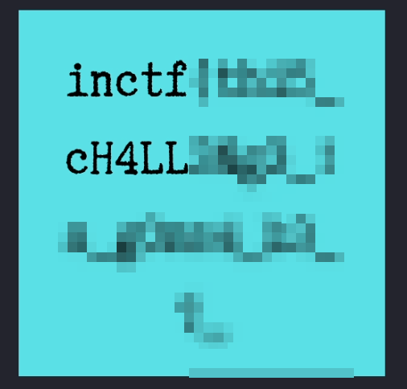 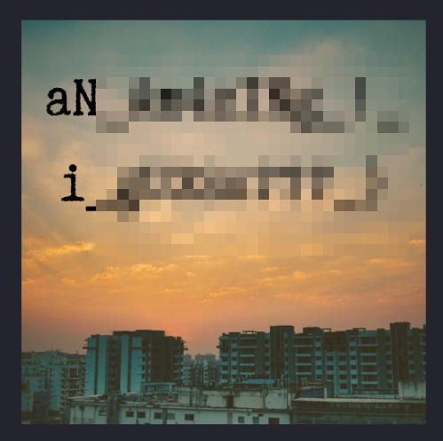
Con este último reto concluyo la serie completa de MemLabs, un conjunto de desafíos centrados en el análisis forense de memoria RAM que me han permitido profundizar y consolidar conocimientos clave en el uso de herramientas como Volatility.
Durante el proceso he tenido la oportunidad de enfrentarme a escenarios realistas, aprender a interpretar artefactos de memoria, identificar actividad sospechosa y afinar el enfoque analítico necesario para este tipo de investigaciones. Cada write-up que he realizado refleja no solo la solución técnica, sino también el aprendizaje detrás de cada caso.
Agradezco el esfuerzo de quienes desarrollaron estos retos: su calidad y variedad los convierten en una excelente referencia para quienes quieran introducirse o avanzar en el mundo del memory forensics.
Ir al laboratorio anterior